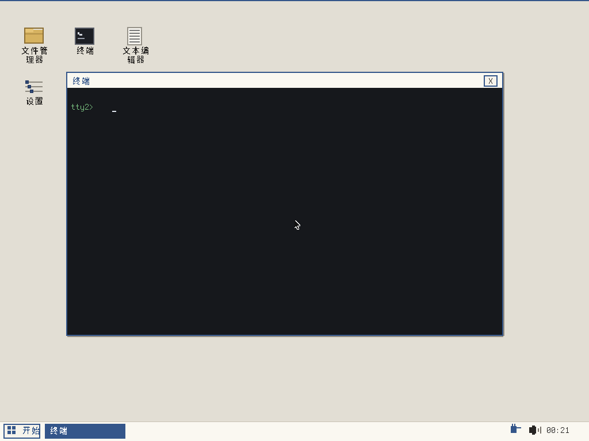

一个直接由 UEFI 固件加载的实验性系统镜像：开机进图形桌面，带文件管理器、终端、文本编辑器、任务管理器与设置，能读写 FAT32、加载网卡驱动、执行 .wct 模块。代码为 C，编译成单个 EFI 可执行文件，运行时不经过 Linux 内核。
它目前是测试版本，不是完整桌面操作系统：没有软件生态、没有安装到硬盘的完整流程、没有音频输出验证，性能数据也不具备与其他系统对比的条件。
| 文件 | 说明 |
|---|---|
| wcteos-0.9-test.iso | 光盘镜像，可刻盘或挂虚拟机光驱 |
| wcteos-0.9-test-usb.img | 48MB FAT32 镜像，dd 到 U 盘即可启动 |
| 源码仓库 | 内核、桌面外壳、模块工具与构建脚本 |

纸片风格桌面：图标列、任务栏、托盘时钟与网络状态；双击图标打开窗口，任务栏右键打开任务管理器，桌面右键可刷新、新建文件夹或文本文档。
浏览 FAT32 目录，查看文件属性（大小、类型、属性位），删除普通文件；引导文件与 .dwc、.glf 受保护，拒绝删除。
文件、网络、系统三类命令；提示符紧跟输出。支持 attrib、ipconfig、ping、run 等。
.wct 模块可双击或在终端 run；支持 WCTX 混淆容器，加载前校验 CRC32。
e1000 与 rtl8139 驱动，DHCP 取址、ARP 解析网关；rtl8139 在模拟网络下不稳定，未宣称可用。
主题与壁纸切换（含 .glf 动态壁纸）、运行框、任务管理器、锁屏。
单个 EFI 可执行，mingw-w64 交叉编译，xorriso 打 ISO，mtools 写 ESP。
| 文档 | 内容 |
|---|---|
| .wct 编译手册 | 从装工具链到打包运行，含完整命令与常见错误 |
| 终端使用手册 | 打开方式、输入、文件与网络操作 |
| 命令参考 | 全部命令语法、参数、示例与别名 |
| 内核运行报告 | 测试环境、复现命令、实测结果与不能确认的部分 |
MIT。项目保留 ETQWFD 与上游作者 aqtwWCT95 的版权声明；再分发时请一并保留。详见 版权与许可。